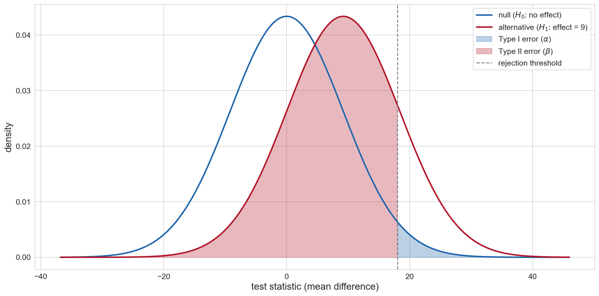
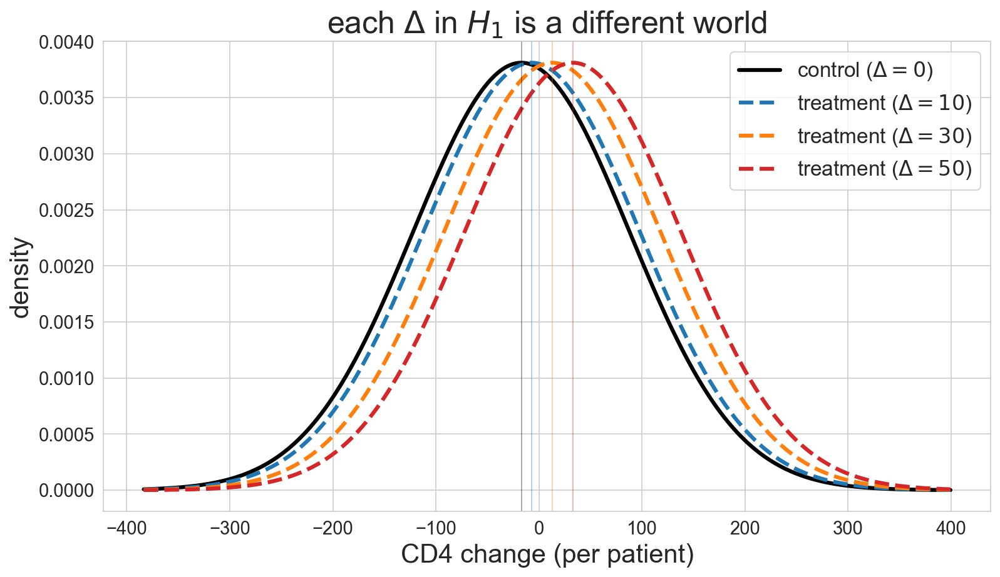
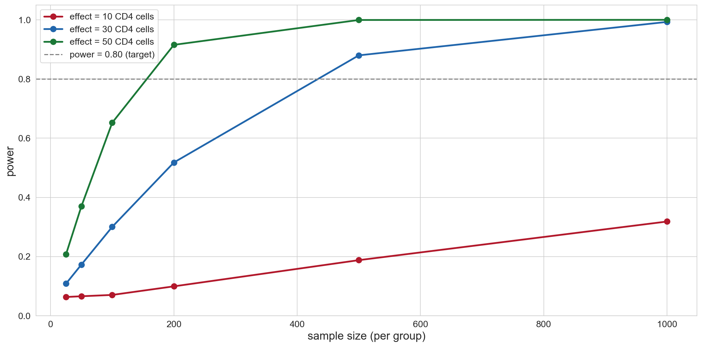

Lecture 10: Hypothesis Testing
MSE 125 — Applied Statistics
Monday, May 4, 2026
in chapter 9 we shuffled labels and got p ≈ 10⁻⁴
the drug works
but in 1991 the trial hadn’t been run yet
logistics
- quiz 5: Wed May 6 — Lec 10-11 (hypothesis testing + multiple testing)
- HW 3: due Fri May 8
- project: proposals returned with feedback
the design questions Ch 9 left on the table
before any data exists:
- how many patients do we enroll?
- what p-value would convince us?
- what errors are we willing to make, and at what rate?
permutation tests need data to shuffle — these questions need a formula
today
- the framework: \(H_0\), \(H_1\), the 4-step recipe — formalized
- two errors, not one — Type I, Type II, power
- from simulation to formula: Welch’s t-test
- power: how many patients? requires guessing the effect size
- significance ≠ importance
the framework
the recipe
every hypothesis test, same four steps:
- state \(H_0\) and \(H_1\)
- choose a test statistic
- determine the null distribution
- compute the p-value, reject if \(p < \alpha\)
Ch 9 walked through all four with a permutation test — today we name the parts and swap step 3 for a formula
step 1 — competing claims
for the clinical trial:
- \(H_0\): \(\mu_T - \mu_C = 0\) (no effect)
- \(H_1\): \(\mu_T - \mu_C \neq 0\) (some effect)
note: \(H_1\) is a family of effects, not a single value
a 5-cell effect, a 50-cell effect, a 500-cell effect — all live inside \(H_1\)
state \(H_0\) and \(H_1\) for each scenario
- a new website layout might increase sign-ups
- a coin might be unfair
- a pollution standard might not be met
- write \(H_0\) and \(H_1\) for all three
- compare with a neighbor
\(H_0\) and \(H_1\) — the formal version
null and alternative hypotheses
\(H_0\) = a single, specific claim about the world (typically “no effect”)
\(H_1\) = the complement of \(H_0\) — a family of states ruled out by the null
a hypothesis test asks whether the data are surprising enough under \(H_0\) to reject it
the test does not require us to pick a specific effect inside \(H_1\) — only to decide whether \(H_0\) is ruled out
two errors, not one
you’re the FDA reviewing a new drug
which mistake is worse?
- A. approve a useless drug — patients get side effects with no benefit
- B. reject a drug that actually saves lives — patients die who could have been saved
- hands up for A or B — no fence-sitting
- debrief: why did you choose what you chose?
the courtroom analogy
think of \(H_0\) as “innocent until proven guilty”
- Type I error = convicting an innocent person
- rejected \(H_0\) when it was actually true
- Type II error = letting a guilty person go free
- failed to reject \(H_0\) when \(H_1\) was actually true
the error table
| \(H_0\) true (no effect) | \(H_1\) true (real effect) | |
|---|---|---|
| reject \(H_0\) | Type I error (\(\alpha\)) | correct |
| fail to reject \(H_0\) | correct | Type II error (\(\beta\)) |
power = \(1 - \beta\) = probability of correctly detecting a real effect
definitions — Type I, Type II, power
significance level, Type I error, Type II error, power
- significance level \(\alpha\): threshold for rejecting \(H_0\) — equals the Type I error rate
- Type II error rate \(\beta\): \(P(\text{fail to reject } H_0 \mid H_1 \text{ true})\)
- power \(= 1 - \beta\): probability of correctly detecting a real effect
“fail to reject” — not “accept”
we say “fail to reject \(H_0\)” — never “accept \(H_0\)”
a non-significant result means the data are compatible with \(H_0\)
but they might also be compatible with many other hypotheses
absence of evidence is not evidence of absence
the α-β tradeoff

move the threshold right \(\Rightarrow\) fewer false positives, more false negatives
there is no free lunch
p-values are uniform under \(H_0\)
if \(H_0\) is true and the test is correctly specified:
p-values are Uniform(0, 1)
choosing \(\alpha = 0.05\) \(\Rightarrow\) exactly 5% of uniform draws fall below 0.05
so \(\alpha\) does what it advertises — the Type I rate equals \(\alpha\) by construction
from simulation to formula
why a formula?
Ch 9 — null distribution by shuffling: 10,000 fake datasets, each producing one fake statistic
design question: “with 200 patients per arm and a 30-cell effect, how often will I reject?”
no data to shuffle — we need a closed-form null distribution that depends only on \(n_T\) and \(n_C\)
Welch’s t-statistic
using the same notation as Ch 8 (sample means \(\bar X_T, \bar X_C\), sample variances \(s_T^2, s_C^2\), sample sizes \(n_T, n_C\)):
\[t = \frac{\bar{X}_T - \bar{X}_C}{\left(s_T^2/n_T + s_C^2/n_C\right)^{1/2}}\]
- numerator: the observed effect (Ch 8 difference of means)
- denominator: the standard error \(\widehat{\text{SE}}\) from Ch 8
gloss: how many standard errors is the effect from zero?
the brewer who invented the t-test
- William Sealy Gosset, chemist at Guinness brewery, Dublin
- needed to compare barley varieties with tiny samples
- normal approximation was unreliable at small \(n\)
- worked out the exact small-sample distribution
- published in 1908 as “Student” — Guinness banned using real names
. . .
that’s why it’s called Student’s t-distribution
Salsburg, The Lady Tasting Tea, Ch. 2
why Welch’s specifically?
two flavors of two-sample t-test:
- Student’s: assumes equal variance in both groups
- Welch’s: doesn’t
real data: variances rarely equal
equal_var=False is the safe default — use it unless you have a positive reason to assume equal variance
Welch’s on ACTG 175
permutation (Ch 9): \(p \approx 10^{-4}\) — limited by 10,000 shuffles
same conclusion — but the formula will also tell us what would have happened with 100 patients per arm, or 30, or 1000
a different trial produces p = 0.04
colleague A: “just barely significant — shouldn’t be trusted”
colleague B: “p < 0.05 — we reject”
who is right? what does the disagreement reveal about the 0.05 threshold?
- think individually, then discuss with a neighbor
- be ready to defend either side
what should \(\alpha\) be?
| field | typical \(\alpha\) | why |
|---|---|---|
| social science | 0.05 | convention (Fisher, 1925) |
| clinical trials | two trials, each 0.05 | combined: ~0.0025 |
| particle physics | ~0.0000003 | “5-sigma” |
the choice depends on the cost of each error type, not on convention
power: how many patients?
power = the inverse question
so far: given data, what’s the p-value?
now: given a hoped-for effect, what’s the chance of a small p-value?
this is what study designers compute before the trial — to decide \(n\)
the catch — power needs a specific \(H_1\)
remember: \(H_1\) is a family of effects
power asks: “what’s the chance we reject if the true effect is \(\Delta\)?”
different \(\Delta\) → different power
so: we have to commit to a specific effect size to compute one number
what does picking \(\Delta\) mean?
each \(\Delta\) = a different world we might be in

bigger \(\Delta\) → populations farther apart → easier to detect
you must guess the effect size
no effect size, no power analysis
power = \(P(\text{reject} \mid \text{true effect} = \Delta)\) — needs a value of \(\Delta\)
where the guess comes from:
- prior studies of similar interventions (most defensible)
- the smallest effect that matters clinically or commercially
- a pilot study designed to estimate plausible effects
doubling the assumed effect cuts required \(n\) by roughly 4×
power curves — effect size vs sample size

- large effect (50 CD4): detectable with small samples
- small effect (10 CD4): needs hundreds per group
- gray line = 80% power target
sample size planning — the formula
Cohen’s \(d = \Delta / \sigma\) — effect in standard-deviation units
(small \(\approx\) 0.2, medium \(\approx\) 0.5, large \(\approx\) 0.8)
CI/test duality
a 95% CI excludes 0 ↔︎ a two-sided test of \(H_0: \mu = 0\) rejects at \(\alpha = 0.05\)
Ch 8 bootstrap CI for ACTG: \([39.6, 61.3]\) → excludes 0
Ch 9 permutation: \(p \approx 10^{-4}\) → rejects at 0.05
not a coincidence — same evidence, two views
significance ≠ importance
with enough data, anything is “significant”
n per group p < 0.05?
15 rarely
50 sometimes
200 almost always
1,000 alwaysp-value shrinks because the standard error shrinks
the effect itself doesn’t have to be large — only nonzero
the blood pressure drug
a clinical trial with 10,000 participants finds:
- p = 0.013 (statistically significant at \(\alpha = 0.05\))
- actual effect: 2 mmHg decrease in systolic BP
for context: a cup of coffee temporarily raises BP by about 5 mmHg
the drug’s effect is real — it’s not zero — but it’s smaller than your morning coffee
Mesas et al., Journal of Hypertension, 2011
the blood pressure drug: p = 0.013, effect = 2 mmHg, 10,000 patients
would you recommend this drug to patients?
consider:
- costs and side effects
- alternative treatments
- what “clinically meaningful” means
- take a position and defend it
- what additional information would change your mind?
always report effect sizes
a small p-value tells you: effect is unlikely to be zero
it does not tell you: the effect is large or important
always report:
- effect size
- confidence interval
- p-value
all three together — never p-value alone
summary
- Ch 10 = study design: two errors, formula-based test, power analysis
- \(H_1\) is a family — power analysis forces us to pick a specific effect inside it
- Welch’s t-test is the formula-based analog of permutation — solvable for studies you haven’t run yet
- always report effect sizes alongside p-values
next time
we can test one hypothesis carefully
what happens when you test 20 at once?
Ch 11: multiple testing, Bonferroni correction, false discovery rate, p-hacking
one-minute feedback
- what was the most useful thing you learned today?
- what was the most confusing?